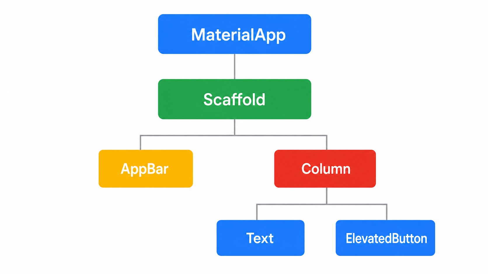
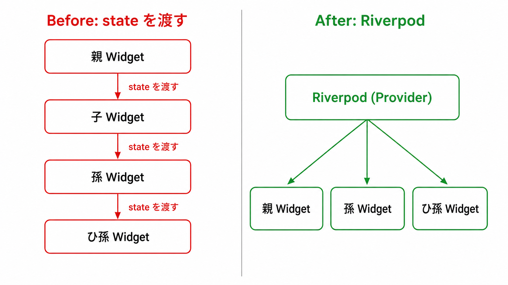
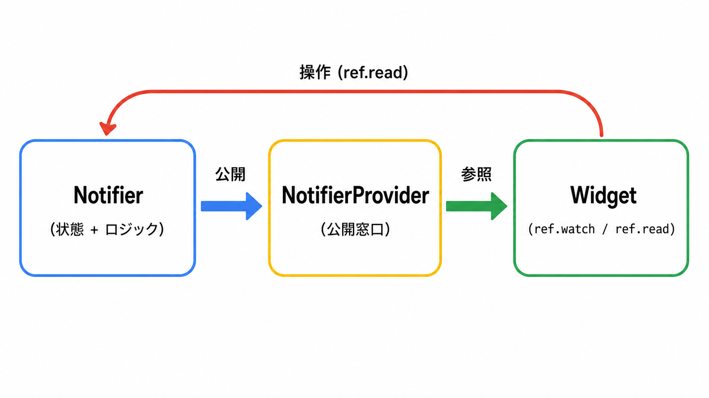

このコードラボでは、Flutter と Riverpod を使って、Firestore から投稿をリアルタイム取得するミニ SNS フィードを作ります。スターターコードから始めて、3 つの Dart ファイルを編集しながら完成版に近づけます。
縦スクロールで投稿を眺める Web 対応の Flutter アプリを作ります。
posts コレクションから投稿を新着順に表示する完成版のコードは flutter-workshop/example/、スターターコードは flutter-workshop/template/ にあります。
ConsumerWidget と WidgetRef で Riverpod の値を読む方法StreamProvider で Firestore のリアルタイム更新を扱う方法AsyncValue.when() で loading / error / data を出し分ける方法ProviderScope の override でリストの 1 件分のデータを子 Widget に渡す方法Stack と Positioned で画像の上に UI を重ねる方法このコードラボでは Flutter Web を Chrome で動かします。Android Studio、Android SDK、Xcode、iOS シミュレータ、Android エミュレータは使いません。
構成は Google Codelabs の進め方に合わせています。たとえば、完成像を先に示す、スターターコードから始める、各ステップで目に見える成果を作る、という流れです。
このステップでは、Flutter Web を Chrome で起動できる状態を作ります。すでにインストール済みのツールは、確認コマンドだけ実行してください。
Windows の場合は Git for Windows をインストールします。winget を使う場合は PowerShell で次を実行します。
winget install --id Git.Git -e --source winget
macOS の場合は、ターミナルで Xcode Command Line Tools をインストールします。
xcode-select --install
インストールできたか確認します。
git --version
期待される出力:
git version 2.x.x
バージョン番号が表示されれば成功です。
Google Chrome と Visual Studio Code をインストールします。
macOS でターミナルから code . を使いたい場合は、VS Code を開いて Cmd + Shift + P を押し、Shell Command: Install 'code' command in PATH を実行します。
Flutter 公式のインストールページでは、VS Code などの Code OSS ベースのエディタからセットアップする Quick start が推奨されています。このコードラボでも VS Code の Flutter 拡張機能から SDK を入れます。
Flutter を検索し、Flutter 拡張機能をインストールします。Ctrl + Shift + P または Cmd + Shift + P で Command Palette を開きます。Flutter: New Project を選択します。Windows の保存先例:
C:\src
macOS の保存先例:
~/development
インストール後、VS Code とターミナルを開き直します。
PowerShell、コマンドプロンプト、またはターミナルで次を実行します。
flutter --version
flutter doctor -v
期待される出力:
Flutter 3.x.x • channel stable • ...
...
[✓] Chrome - develop for the web
このコードラボでは Chrome で動かすため、Chrome - develop for the web にチェックが付いていれば進められます。Android toolchain、Xcode、Android Studio にエラーが出ても、このハンズオンでは無視して構いません。
Troubleshooting: flutter コマンドが見つからない場合は、VS Code とターミナルをすべて閉じて開き直してください。それでも解決しない場合は、Flutter SDK の bin フォルダが PATH に追加されているか確認します。
任意の作業フォルダでリポジトリをクローンします。
git clone https://github.com/gdsc-osaka/flutter-workshop.git
cd flutter-workshop
flutter pub get
flutter run -d chrome
期待される出力:
Launching lib/main.dart on Chrome in debug mode...
...
Flutter run key commands.
Chrome が開いて TODO: 投稿一覧を表示する と表示されたら準備完了です。
最後に VS Code でプロジェクトを開きます。
code .
このステップでは、実装で使う Flutter / Dart の考え方だけを確認します。詳しい文法を全部覚える必要はありません。
Flutter は Google が開発しているマルチプラットフォーム UI フレームワークです。Flutter 公式の learning pathway でも、Dart と Flutter の基礎、Widget、状態管理、レイアウトを順に学ぶ構成になっています。
Flutter では、画面の部品を Widget と呼びます。
TextImageColumnListViewScaffold
Widget は入れ子になって 1 本のツリーを作ります。親 Widget が child または children で子 Widget を持ちます。
すでに Web 開発を知っている場合は、次の対応で考えると理解しやすくなります。
Web | Flutter |
DOM ツリー | Widget ツリー |
|
|
CSS の色、余白、角丸 | Widget のプロパティ |
React の component | Widget |
React の state / hooks |
|
Vite の HMR | Hot reload |
Flutter のコードでは末尾のカンマをよく使います。Dart formatter が読みやすい形に整えてくれるため、複数行の Widget ではカンマを付けておくと便利です。
lib/main.dart と lib/app.dart はすでに用意されています。今回は編集しません。
lib/main.dart は次の流れでアプリを起動しています。
Future<void> main() async {
WidgetsFlutterBinding.ensureInitialized();
await Firebase.initializeApp(
options: DefaultFirebaseOptions.currentPlatform,
);
runApp(const ProviderScope(child: MiniInstagramApp()));
}
Firebase.initializeApp() で Firebase を初期化し、ProviderScope で Riverpod をアプリ全体から使えるようにしています。
flutter run -d chrome で起動している間は、ファイル保存後にターミナルで r を押すと Hot reload、R を押すと Hot restart できます。
r Hot reload
R Hot restart
q Quit
表示だけを変えたときは Hot reload、Firebase 初期化や Provider の作りを変えたときは Hot restart を使います。
このステップでは、今回使う Riverpod の部品を確認します。覚えるのは ProviderScope、Provider、StreamProvider、NotifierProvider、ref.watch、ref.read だけです。
StatefulWidget だけで状態を持つと、その状態は基本的に Widget の内側に閉じます。離れた Widget で同じ状態を使いたい場合、親から子へ値を渡し続ける必要があります。

Riverpod では、状態やデータ取得処理を Widget の外に置きます。Widget は必要な Provider を ref.watch() で読み、値が変わると自動で再描画されます。
今回のデータフローは次の形です。
FeedPage
ref.watch(postsProvider)
↓
postsProvider
Firestore の posts コレクションを購読
↓
PostCard
currentPostProvider で 1 件分の投稿を受け取る
likedPostIdsProvider でいいね状態を読む
postActionsProvider で Firestore を更新する

lib/providers/post_providers.dart には、すでに次の Provider が用意されています。
final firestoreProvider = Provider<FirebaseFirestore>((ref) {
return FirebaseFirestore.instance;
});
final postsProvider = StreamProvider<List<Post>>((ref) {
// TODO
return const Stream<List<Post>>.empty();
});
final likedPostIdsProvider = NotifierProvider<LikedPostIds, Set<String>>(
LikedPostIds.new,
);
postsProvider はこのあと Firestore の stream に置き換えます。likedPostIdsProvider は、いいね済み投稿 ID の集合を管理します。
Widget から Provider を使うときは、表示用と操作用で読み方を分けます。
やりたいこと | 使う API | 例 |
画面に表示する値を読む |
|
|
ボタン押下で処理を呼ぶ |
|
|
表示は watch、操作は read と覚えてください。
StreamProvider を watch すると、Widget 側には AsyncValue が届きます。AsyncValue.when() を使うと、読み込み中、エラー、データありの UI を分けられます。
final posts = ref.watch(postsProvider);
return posts.when(
loading: () => const CircularProgressIndicator(),
error: (error, stackTrace) => Text('エラー: $error'),
data: (items) => Text('投稿数: ${items.length}'),
);
この形を次のステップで FeedPage に組み込みます。
このステップでは、postsProvider から投稿リストを受け取り、縦スクロールのリストとして表示します。
lib/feed_page.dart を開きます。
class FeedPage extends ConsumerWidget {
const FeedPage({super.key});
@override
Widget build(BuildContext context, WidgetRef ref) {
// TODO
ref.watch(postsProvider);
return const Scaffold(
body: Center(
child: Text('TODO: 投稿一覧を表示する'),
),
);
}
}
postsProvider を watch していますが、まだ画面には使っていません。
ListView.builder で投稿の数だけ PostCard を作ります。1 件分の投稿は ProviderScope の overrides で currentPostProvider に渡します。
ListView.builder(
itemCount: items.length,
itemBuilder: (context, index) {
return ProviderScope(
overrides: [
currentPostProvider.overrideWithValue(items[index]),
],
child: const PostCard(),
);
},
)
この書き方にすると、PostCard は引数を増やさずに currentPostProvider から投稿データを読めます。
lib/feed_page.dart を以下の内容で上書きします。
import 'package:flutter/material.dart';
import 'package:flutter_riverpod/flutter_riverpod.dart';
import 'providers/post_providers.dart';
import 'widgets/post_card.dart';
class FeedPage extends ConsumerWidget {
const FeedPage({super.key});
@override
Widget build(BuildContext context, WidgetRef ref) {
final posts = ref.watch(postsProvider);
return Scaffold(
body: posts.when(
data: (items) {
if (items.isEmpty) {
return const _EmptyFeed();
}
return RefreshIndicator(
onRefresh: () async {
ref.invalidate(postsProvider);
},
child: ListView.builder(
padding: EdgeInsets.zero,
itemCount: items.length,
itemBuilder: (context, index) {
return ProviderScope(
overrides: [
currentPostProvider.overrideWithValue(items[index]),
],
child: const PostCard(),
);
},
),
);
},
error: (error, stackTrace) {
return _ErrorView(message: error.toString());
},
loading: () {
return const Center(child: CircularProgressIndicator());
},
),
);
}
}
class _EmptyFeed extends StatelessWidget {
const _EmptyFeed();
@override
Widget build(BuildContext context) {
return const Center(
child: Padding(
padding: EdgeInsets.all(24),
child: Text(
'投稿がまだありません。Firestore に posts データを追加してください。',
textAlign: TextAlign.center,
),
),
);
}
}
class _ErrorView extends StatelessWidget {
const _ErrorView({required this.message});
final String message;
@override
Widget build(BuildContext context) {
return Center(
child: Padding(
padding: const EdgeInsets.all(24),
child: Column(
mainAxisSize: MainAxisSize.min,
children: [
Icon(
Icons.cloud_off_outlined,
size: 40,
color: Theme.of(context).colorScheme.error,
),
const SizedBox(height: 12),
const Text(
'Firestore から投稿を読み込めませんでした。',
textAlign: TextAlign.center,
),
const SizedBox(height: 8),
Text(
message,
textAlign: TextAlign.center,
style: Theme.of(context).textTheme.bodySmall,
),
],
),
),
);
}
}
このコードは AsyncValue.when() で 3 つの状態を分けています。data では投稿が空のときの表示、投稿があるときの ListView、Pull to Refresh の処理をまとめています。
ファイルを保存し、必要に応じてターミナルで R を押します。
期待される表示:
投稿がまだありません。Firestore に posts データを追加してください。 と表示される次のステップで postsProvider を Firestore に接続します。
このステップでは、postsProvider を Firestore に接続します。Firestore の posts コレクションを購読し、変更があれば画面へリアルタイムに反映します。
lib/providers/post_providers.dart を開きます。
final postsProvider = StreamProvider<List<Post>>((ref) {
// TODO
return const Stream<List<Post>>.empty();
});
今は空の stream を返しているため、投稿データは届きません。
lib/models/post.dart には、Firestore のドキュメントをアプリ用の Post に変換する処理が用意されています。
フィールド | 型 | 内容 |
|
| Firestore ドキュメント ID |
|
| 投稿画像の URL |
|
| 投稿者アイコンの URL |
|
| 投稿者のユーザー名 |
|
| 投稿本文 |
|
| いいね数 |
|
| 投稿日時 |
Post.fromDocument() を使うと、Firestore の DocumentSnapshot を Post に変換できます。
Firestore から投稿を取得する処理は次の形です。
final firestore = ref.watch(firestoreProvider);
return firestore
.collection('posts')
.orderBy('createdAt', descending: true)
.snapshots()
.map((snapshot) {
return snapshot.docs.map(Post.fromDocument).toList();
});
collection('posts') でコレクションを選び、orderBy('createdAt', descending: true) で新着順に並べます。snapshots() は Firestore の変更を stream として返します。
lib/providers/post_providers.dart の postsProvider だけを以下に置き換えます。
final postsProvider = StreamProvider<List<Post>>((ref) {
final firestore = ref.watch(firestoreProvider);
return firestore
.collection('posts')
.orderBy('createdAt', descending: true)
.snapshots()
.map((snapshot) {
return snapshot.docs.map(Post.fromDocument).toList();
});
});
この Provider は List<Post> の stream を返します。Firestore のデータが増えたり、いいね数が変わったりすると、FeedPage が再描画されます。
ファイルを保存し、ターミナルで R を押して Hot restart します。
期待される表示:
posts データがある場合は、縦長のプレースホルダーが投稿数分表示されるPostCard はまだ未実装なので、各カードには TODO: 投稿カードを作る と表示されるこのステップでは、PostCard を完成させます。投稿画像を背景に表示し、その上にユーザー情報、本文、いいねボタンを重ねます。
lib/widgets/post_card.dart を開きます。
class PostCard extends ConsumerWidget {
const PostCard({super.key});
@override
Widget build(BuildContext context, WidgetRef ref) {
// TODO
ref.watch(currentPostProvider);
return const AspectRatio(
aspectRatio: 9 / 16,
child: ColoredBox(
color: Color(0xFF1D1D21),
child: Center(
child: Text('TODO: 投稿カードを作る'),
),
),
);
}
}
currentPostProvider を watch していますが、まだ投稿データを表示していません。
カードは Stack で作ります。背景画像を一番下に置き、その上にグラデーション、本文、いいねボタン、ユーザー情報を重ねます。
Stack(
fit: StackFit.expand,
children: [
Image.network(post.imageUrl, fit: BoxFit.cover),
const DecoratedBox(decoration: BoxDecoration(...)),
Positioned(...),
],
)
AspectRatio(aspectRatio: 9 / 16) で縦長の投稿カードにします。
いいね済みかどうかは likedPostIdsProvider から読みます。
final post = ref.watch(currentPostProvider);
final likedPostIds = ref.watch(likedPostIdsProvider);
final isLiked = likedPostIds.contains(post.id);
ボタンを押したときは postActionsProvider を read して、Firestore の likes を更新します。
await ref
.read(postActionsProvider)
.toggleLike(post, isLiked: isLiked);
ここでも表示は watch、操作は read です。
lib/widgets/post_card.dart を以下の内容で上書きします。
import 'package:flutter/material.dart';
import 'package:flutter_riverpod/flutter_riverpod.dart';
import '../models/post.dart';
import '../providers/post_providers.dart';
final currentPostProvider = Provider<Post>((ref) {
throw UnimplementedError('PostCard requires currentPostProvider override.');
});
class PostCard extends ConsumerWidget {
const PostCard({super.key});
@override
Widget build(BuildContext context, WidgetRef ref) {
final post = ref.watch(currentPostProvider);
final likedPostIds = ref.watch(likedPostIdsProvider);
final isLiked = likedPostIds.contains(post.id);
return AspectRatio(
aspectRatio: 9 / 16,
child: Stack(
fit: StackFit.expand,
children: [
Image.network(
post.imageUrl,
fit: BoxFit.cover,
loadingBuilder: (context, child, loadingProgress) {
if (loadingProgress == null) {
return child;
}
return const Center(child: CircularProgressIndicator());
},
errorBuilder: (context, error, stackTrace) {
return const ColoredBox(
color: Color(0xFF1D1D21),
child: Center(
child: Icon(Icons.broken_image_outlined, size: 48),
),
);
},
),
const DecoratedBox(
decoration: BoxDecoration(
gradient: LinearGradient(
begin: Alignment.topCenter,
end: Alignment.bottomCenter,
colors: [
Colors.transparent,
Colors.transparent,
Color(0xB0000000),
],
),
),
),
Positioned(
right: 8,
bottom: 20,
child: Column(
mainAxisSize: MainAxisSize.min,
children: [
IconButton.filledTonal(
tooltip: isLiked ? 'いいねを取り消す' : 'いいね',
onPressed: () async {
await ref
.read(postActionsProvider)
.toggleLike(post, isLiked: isLiked);
},
icon: Icon(
isLiked ? Icons.favorite : Icons.favorite_border,
color: isLiked ? Colors.pinkAccent : Colors.white,
),
),
Text(
'${post.likes}',
style: const TextStyle(
color: Colors.white,
fontWeight: FontWeight.w700,
shadows: [Shadow(color: Colors.black54, blurRadius: 8)],
),
),
],
),
),
Positioned(
left: 16,
right: 80,
bottom: 28,
child: Text(
post.text,
maxLines: 3,
overflow: TextOverflow.ellipsis,
style: Theme.of(context).textTheme.bodyLarge?.copyWith(
color: Colors.white,
fontWeight: FontWeight.w600,
shadows: const [Shadow(color: Colors.black87, blurRadius: 8)],
),
),
),
Positioned(
top: 12,
left: 12,
right: 12,
child: SafeArea(
bottom: false,
child: Row(
children: [
CircleAvatar(
radius: 17,
backgroundColor: Colors.white,
child: CircleAvatar(
radius: 15,
backgroundColor: const Color(0xFF2A2A2E),
backgroundImage: post.authorUrl.isEmpty
? null
: NetworkImage(post.authorUrl),
child: post.authorUrl.isEmpty
? const Icon(
Icons.person,
color: Colors.white,
size: 18,
)
: null,
),
),
const SizedBox(width: 10),
Text(
post.authorId,
maxLines: 1,
overflow: TextOverflow.ellipsis,
style: const TextStyle(
color: Colors.white,
fontWeight: FontWeight.w700,
shadows: [Shadow(color: Colors.black54, blurRadius: 8)],
),
),
],
),
),
),
],
),
);
}
}
このコードは Image.network で投稿画像を表示し、画像読み込み中と失敗時の表示も用意しています。IconButton.filledTonal の onPressed では、いいね状態を反転し、Firestore の likes を増減します。
ファイルを保存し、必要に応じて R を押して Hot restart します。
期待される表示:
likes が更新され、しばらくすると画面にも反映される最後に、アプリ全体の動作を確認します。
ターミナルで起動していない場合は、プロジェクトのルートで次を実行します。
flutter run -d chrome
期待される表示:
Launching lib/main.dart on Chrome in debug mode...
Flutter run key commands.
Chrome で次の動作を確認します。
時間が残ったら、次のどれかに挑戦してください。
createdAt を使って投稿時間を表示するこのコードラボでは、Flutter Web でミニ SNS フィードを作りました。
StreamProvider は Firestore のリアルタイム更新と相性が良いAsyncValue.when() を使うと loading / error / data の UI を整理できるStack と Positioned で画像の上に UI を重ねられる詰まったところ、改善したところ、気づいたことを Discord #260521-flutter-workshop に共有してください。
お疲れさまでした。